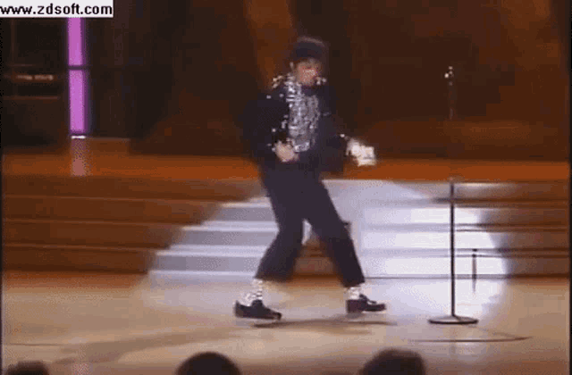
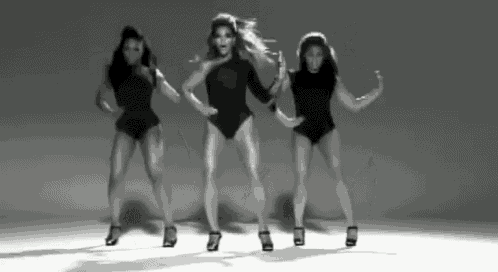
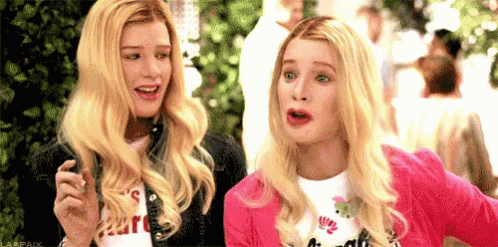
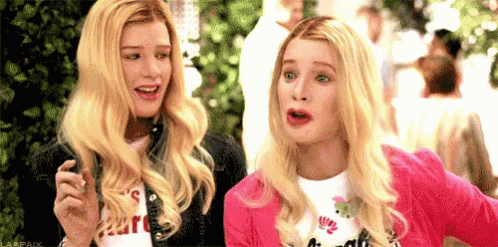

Os anos 2000 foram marcados por inúmeros acontecimentos, mas o foco hoje será falar sobre a cultura
na epóca
Moda
Na Década de 2000 a moda foi se simplificando, tendo como símbolo as blusas de cor única e
cabelos
onde o liso reinava. A maior inspiração para moda desta década provém dos anos 70.
É lançada a moda das calças "saint-tropez" (de cintura baixa).
As calças"boca-de-sino,baggy
e boot-cut" dominaram os guarda-roupas dos jovens e adultos durante toda a década, além de all-stars
e óculos de lentes coloridas, que também tornam-se sucesso entre o público adolescente.
No público feminino, a moda foi adquirindo inspirações de 30 e 20 anos atrás, firmando-se como uma década
bem eclética em questão de vestimentas. Dos anos 70, voltaram: As famosas calças boca-de-sino de
cinturas
baixíssimas — que eram usadas muitas vezes com tops curtíssimos e baby looks, mostrando boa parte do abdômen
-, cintos grandes e largos, cabelos alisados, maquiagens minimalistas, sapatos e botas de plataforma,
tamancos, gloss (com ou sem glitter), boinas, braceletes; brincos de argola e blusas de frente única.
Dos
anos 80, os famosos sapatos de bico e saltos finos, bandanas e vestidos mais justos e curtos reapareceram.
Novas tendências ganham vida, como calças cargo bastante largas ou em estilo militar, conjuntos de
moletom,
saias assimétricas, blusas com decote em "v", vestidos baby doll, pulseiras de cristal swarovski, cabelos
com mechas fortíssimas, piercing no umbigo e até gravatas para as mais despojadas.
No público masculino, os estilos surfista, hippie e punk rock eram os mais notórios. Entre as peças mais
utilizadas estavam os camisões praianos — estampados ou de uma única cor -, óculos de surf, acessórios
metálicos, bonés von dutch, camisas cacharrel de gola alta, calças de cintura baixa muito largas (com ou
sem
correntes) e sapatos esportivos dos mais diversos tipos e cores. Cabelos sem corte definido, espetados e o
estilo moicano (usados muitas vezes com luzes) eram bastante comuns.
No final da década, a moda entra num momento retrô, rebuscando tendências dos anos 80, e a da
primeira
metade dos anos 90. Esses estilos tomariam mais força e se tornariam símbolo da década seguinte.
Música
No dia 25 de Junho de 2009 morre o cantor Michael
Jackson também conhecido como rei do pop (estilo musical que bombava na época e faz muito sucesso
até hoje).
O R&B continua a ser muito bem sucedido graças a artistas como Mariah Carey, Chris
Brown, Ne-Yo, Usher,
Beyoncé, Alicia Keys e Rihanna.
A partir de 2000, o rap está novamente em voga, que é dirigido por artistas como Eminem e 50 Cent.
Rock alternativo evolui e encontra grandes artistas como o Muse, o U2, Depeche Mode e Foo Fighters (sendo as
três últimas bandas famosas desde as décadas de 80 e 90).
O clipe de "Single Ladies (Put a Ring on It)" de
Beyoncé faz enorme sucesso e é considerado o primeiro viral de dança da era da internet.


Artistas
Álbum
Gravadora
Ano de Lançamento
Michael Jackson
Thriller
Epic Records
1982
Beyoncé
I Am... Sasha Fierce
Columbia
2008
U2
How to Dismantle an Atomic Bomb
Insterscope Records
2004
Mariah Carey
The Emancipation of Mimi
Island Def Jam
2005
Rihanna
Good Girl Gone Bad
EMI Records
2007
Chris Brown
Chris Brown
Jive Records
2005
Cinema
Continua nesta década o lançamento de filmes para jovens, incluindo seis exemplares da série Harry Potter,
Crepúsculo (que popularizou um novo tipo de vampiros), Marley & Eu, O Menino do Pijama Listrado e O
Senhor
dos Anéis, que se tornou um dos maiores sucessos cinematográficos da história, acumulando bilhões de dólares
em todo o mundo e críticas positivas, sendo a prova os 17 Óscares ganhos em apenas três filmes lançados;
foi
também mostrado a prequela da saga Star Wars.
A Disney traz de volta os musicais com High School Musical (1, 2 e 3), lançando novos astros como Zac Efron,
Vanessa Hudgens e Ashley Tisdale e acumulando milhões em produtos e com fãs em todo o mundo.
O gênero de filmes de super-heróis experimenta uma renovação e intenso interesse em toda a década de 2000.
Com altas vendas de ingressos e DVD, vários novos filmes de super-heróis foram lançados a cada ano. As
franquias X-Men, Batman e Homem-Aranha foram particularmente proeminentes, e outros filmes notáveis no
gênero podem se incluir Demolidor - O Homem sem Medo (2003), A Liga Extraordinária (2003), Hulk (2003),
Hellboy (2004), Quarteto Fantástico (2005), Homem de Ferro (2008), O incrível Hulk (2008) e Watchmen (2009)
O cinema em 3D fica mais popular e acessível.
O filme Avatar é lançado e se torna um recorde de bilheteria; foi considerado um filme revolucionário devido
aos seus efeitos especiais.
Lindsay Lohan estrela Meninas Malvadas, filme que
definiu toda uma geração de adolescentes dos anos 2000.
Filmes como As Branquelas, Meninas Malvadas, Click, Escola do Rock, Norbit, Penetras Bons de Bico, Borat — O
Segundo Melhor Repórter do Glorioso País Cazaquistão Viaja à América, O Virgem de 40 Anos, Se Beber, Não
Case e a franquias Vovó... Zona, Todo Mundo em Pânico e Legalmente Loira se tornam comédias de grande
sucesso no cinema.

 

{kind=link}